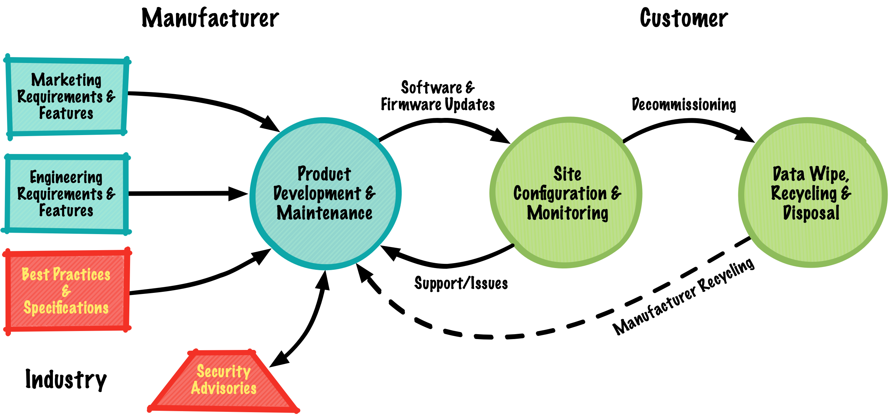
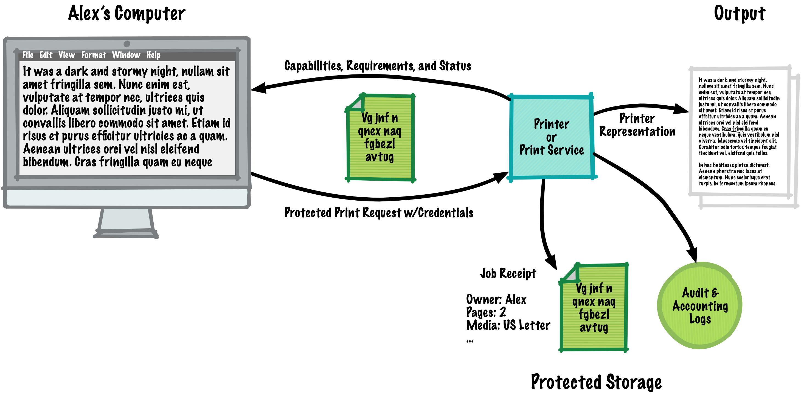

Information security and privacy are not implemented once and forgotten, they are an ongoing process that is applied throughout the life of a device or service. And what works for a workgroup color laser MFP will be different from a home inkjet printer or industrial label printer. Since 1991, the PWG's goal has been to enable appropriate security and privacy processes and controls for every organization, environment, imaging device, and image service. Where appropriate, we also work with other standards organizations including the IEEE, ISO, and TCG to develop meaningful resources for developers of printing and imaging products.
The PWG has helped to develop ISO/IEC 10175-3:2000 Document Printing Application (DPA), IEEE 2600-2008 IEEE Standard for Information Technology: Hardcopy Device and System Security (P2600), and most recently the HCD iTC Collaborative Protection Profile for Hardcopy Devices to define standards and best practices for the secure and safe use of a Printer, Multi-Function Device (MFD), and/or Imaging Service throughout its lifecycle. The PWG has also defined standards for identifying and protecting personally identifying information (PII), including best practices for obtaining explicit consent before collecting or using this information and a standard that supports printing through untrusted intermediaries.
Security requires engineering best practices and standards. Network products require regular and trusted firmware/software updates to address customer issues, changes to best practices and standards, and fixes for security vulnerabilities. When it is time to take a product out of service, customers need a reliable and secure means of wiping the product of any customer information so that it can be recycled and/or disposed of properly.

Printing and imaging products can adopt several basic security features:
A typical network printer supports TLS to protect data in transit, uses a self-encrypting SSD or hard disk to protect data at rest, advertises its privacy policy and configuration using the IPP Privacy Attributes, limits access to authorized users using IPP Authentication Methods, and provides audit and accounting logs using the PWG Common Log Format standard and Job Accounting with IPP best practice:

Reliability comes naturally with proper design and implementation:
Printing necessarily involves Personally Identifiable Information (PII) that needs to be protected: